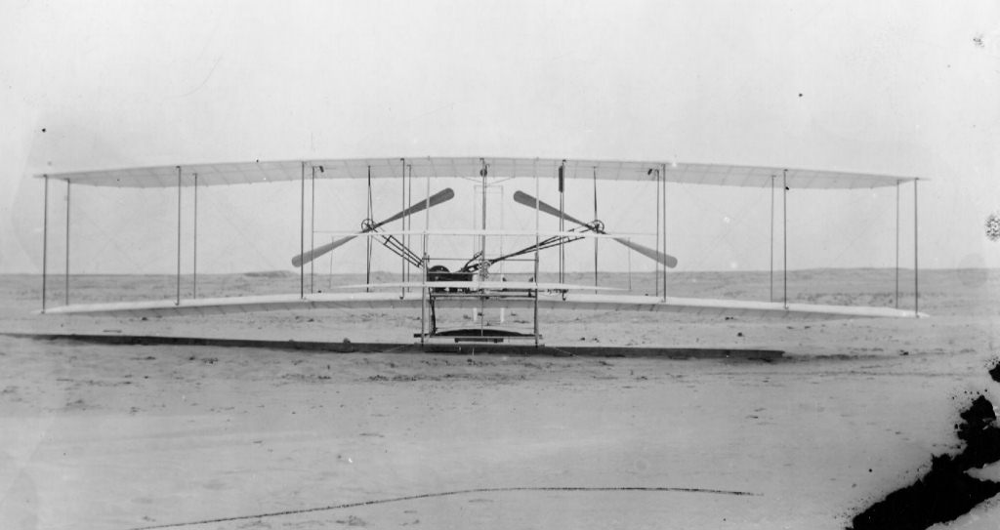
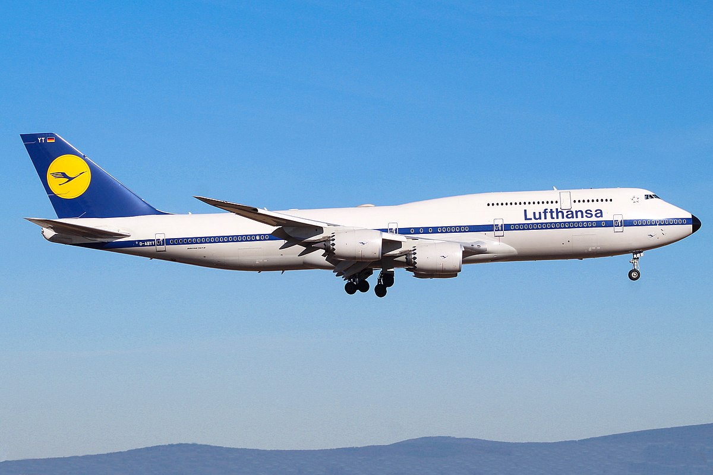
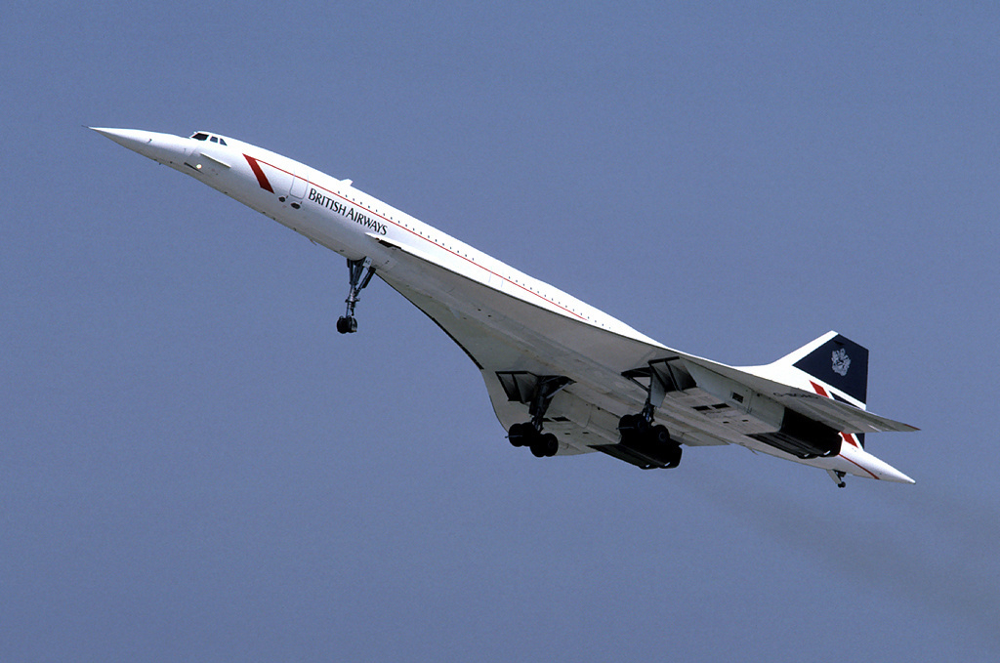
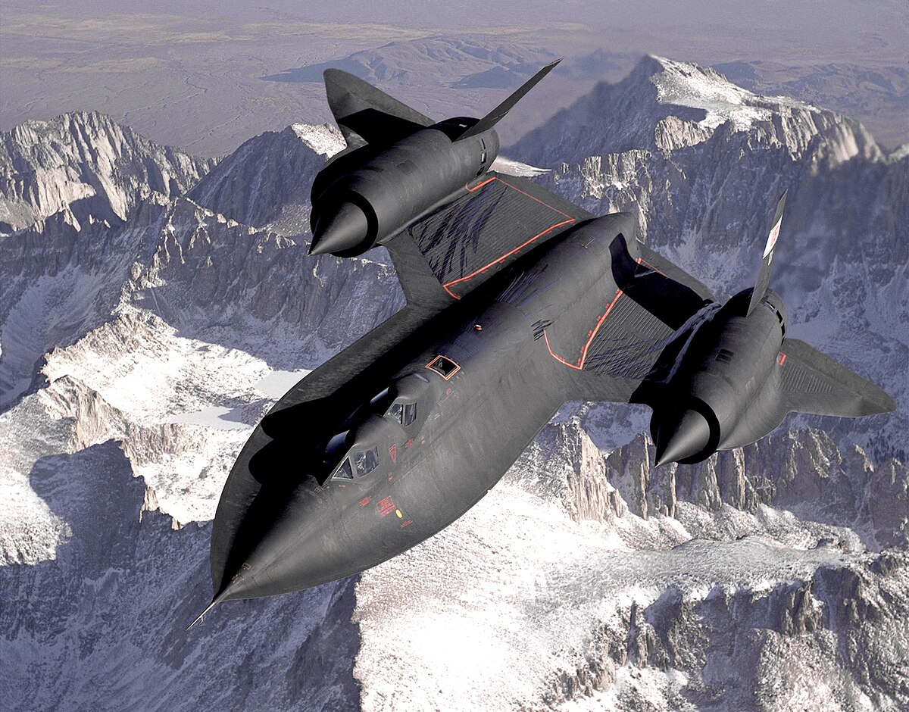

Lista pięciu najbardziej znanych samolotów.

Wilbur i Orville Wright to nazwiska, które na zawsze zapisały się w historii lotnictwa. Byli oni amerykańskimi wynalazcami, którzy rozpoczęli swoją przygodę z lotnictwem jako mechanicy rowerowi w Dayton, Ohio.
Fascynacja lotem pojawiła się u nich w młodym wieku, a ich determinacja i innowacyjność doprowadziły do stworzenia pierwszego skutecznego samolotu.

Boeing 747, znany również jako „Jumbo Jet” lub „Król Przestworzy”, zrewolucjonizował podróże lotnicze i stał się ikoną globalnego transportu lotniczego. Jego historia sięga lat 60. XX wieku, kiedy to firma Boeing podjęła decyzję o stworzeniu największego samolotu pasażerskiego na świecie./p>
Projekt 747 był odpowiedzią na rosnące zapotrzebowanie na podróże lotnicze oraz na rozwój technologii, która umożliwiała budowę większych i bardziej wydajnych samolotów. Jeden został przemieniony w prywatny samolot prezydenta USA.

Concorde był wynikiem ambitnej współpracy międzynarodowej między Wielką Brytanią a Francją. W latach 60. XX wieku obie te potęgi lotnicze postanowiły połączyć siły, by stworzyć samolot pasażerski zdolny do lotów naddźwiękowych.
Concorde miał zrewolucjonizować podróże lotnicze, skracając czas lotu między kontynentami do niespotykanych wcześniej poziomów. Pierwszy prototyp Concorde’a wzbił się w powietrze 2 marca 1969 roku, co było początkiem nowej ery w historii lotnictwa. Concorde mógł osiągać prędkość do Mach 2.04 (około 2,180 km/h), co pozwalało na pokonanie trasy z Londynu do Nowego Jorku w zaledwie 3,5 godziny.

Lockheed SR-71 Blackbird, znany również jako „Czarny Ptak”, był jednym z najbardziej zaawansowanych technologicznie samolotów szpiegowskich swoich czasów. Jego projektowanie rozpoczęło się w latach 50. XX wieku w ramach programu „Skunk Works” firmy Lockheed, którego celem było stworzenie samolotu zdolnego do latania na ekstremalnych wysokościach i z niesamowitą prędkością, aby unikać radzieckich systemów obrony powietrznej podczas zimnej wojny.
SR-71 Blackbird ustanowił wiele rekordów, które do dziś pozostają niepobite. Mógł latać na wysokości ponad 24 kilometrów (80 000 stóp) i osiągać prędkość Mach 3.3 (ponad 3 500 km/h). Aby sprostać tym wyzwaniom, samolot był wykonany w dużej mierze z tytanu, który mógł wytrzymać ekstremalne temperatury generowane podczas lotu z prędkościami naddźwiękowymi.

Airbus A380, znany jako największy samolot pasażerski na świecie, jest wynikiem ambitnych planów konsorcjum Airbus. W latach 90. XX wieku Airbus postanowił stworzyć samolot, który mógłby pomieścić więcej pasażerów niż jakikolwiek inny istniejący model, aby sprostać rosnącemu zapotrzebowaniu na podróże lotnicze.
Pierwszy lot testowy A380 odbył się 27 kwietnia 2005 roku, a w 2007 roku samolot ten wszedł do regularnej eksploatacji. Airbus A380 wyróżnia się swoimi imponującymi rozmiarami i innowacyjnymi rozwiązaniami technicznymi.